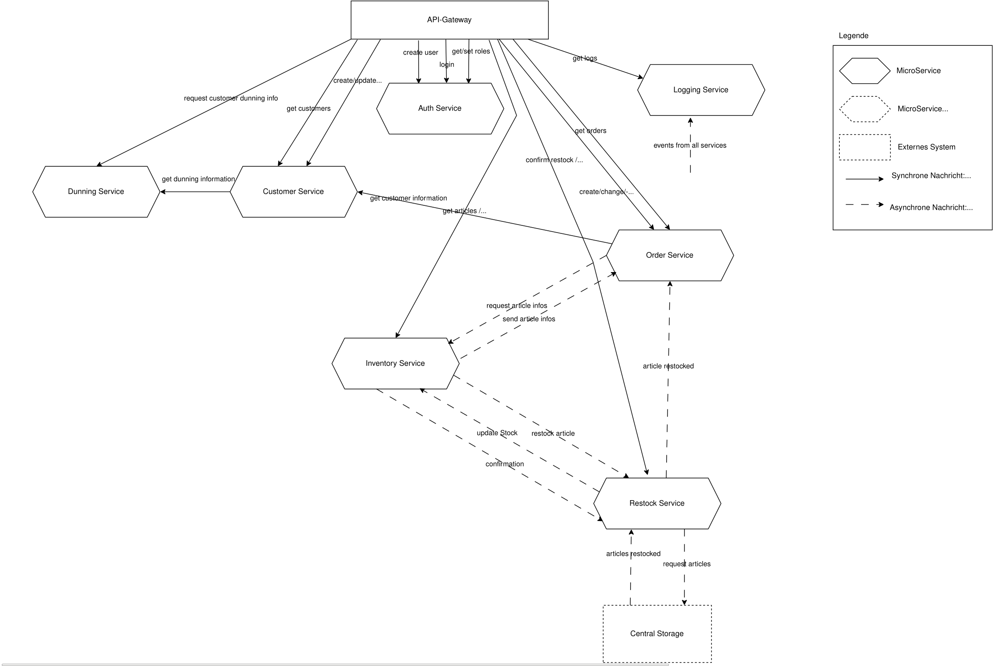

Im Rahmen des Moduls Software Design and Architecture (SWDA) wurde ein verteiltes Filialbestellsystem entwickelt. Es soll eine Bestellplattform für eine Filiale ermöglichen, wo Kunden Artikel bestellen können, die im Lager der Filiale vorhanden sind. Das System basiert auf einer Microservice-Architektur und ermöglicht die vollständige Verwaltung von Kunden, Artikeln und Bestellungen in einem Filialkontext. Durch die Entkopplung der einzelnen Komponenten wird eine hohe Flexibilität, Skalierbarkeit und Wartbarkeit gewährleistet.
Das System wurde bewusst als Microservice-Architektur konzipiert, um maximale Flexibilität und Unabhängigkeit der einzelnen Komponenten zu erreichen. Jeder Service ist für einen spezifischen Geschäftsbereich verantwortlich und kann unabhängig entwickelt, getestet und deployed werden.
Authentifizierung und Autorisierung mit JWT-Tokens. Verwaltung von Benutzern und rollenbasiertem Zugriff. Passwort-Hashing mit Bcrypt.
Vollständige Verwaltung der Kundendaten. Integration mit Dunning Service zur Prüfung von Mahnungen.
Lagerverwaltung mit Artikelstammdaten, Bestandsführung und Mindestmengen-Überwachung. Implementiert Locks und Transaktionen für Datenkonsistenz.
Bestellverwaltung mit komplexem State-Management. Koordination zwischen Customer-, Inventory- und Restock-Service.
Automatische Nachbestellung beim Zentrallager. Verwaltung von Lieferterminen und Bestandsaktualisierung.
Zentrale Protokollierung aller Geschäftsvorgänge. Filterbare Abfrage von Logs nach verschiedenen Kriterien.
Verwaltung und Prüfung von Kundenmahnungen. Schnittstelle zur Integration mit externen Mahnungssystemen.
Zentraler Einstiegspunkt für alle Client-Anfragen. REST-API mit Routing zu den entsprechenden Services über RabbitMQ.

(Klicken zum Vergrößern)
Für die Kommunikation zwischen Services wurde ein Adapter Pattern implementiert. Jeder Service definiert Interfaces für die Kommunikation mit anderen Services. Diese können je nach Bedarf mit verschiedenen Implementierungen (RabbitMQ, Mock für Tests) verwendet werden.
Der Datenbankzugriff wurde abstrahiert durch DAO-Interfaces. Diese werden sowohl mit Hibernate als auch mit In-Memory-Implementierungen bereitgestellt, was das Testen ohne Datenbank ermöglicht.
Im Inventory Service wurde ein ausgefeiltes Concurrency-Management implementiert:
Jeder Microservice verfügt über umfassende Unit-Tests, die in der CI/CD-Pipeline automatisch ausgeführt werden:
In einem separaten TypeScript-Projekt wurden End-to-End-Tests implementiert:
Das Team entschied sich bewusst gegen manuelle Tests und setzte vollständig auf automatisierte Tests. Diese Strategie ermöglichte es, alle Anforderungen und Akzeptanzkriterien systematisch abzudecken und Regressionen frühzeitig zu erkennen.
Das Projekt wurde von einem vierköpfigen Team entwickelt: